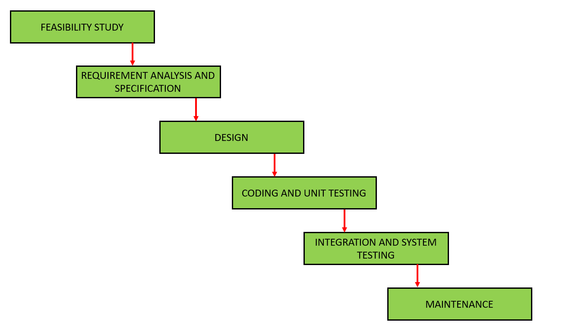
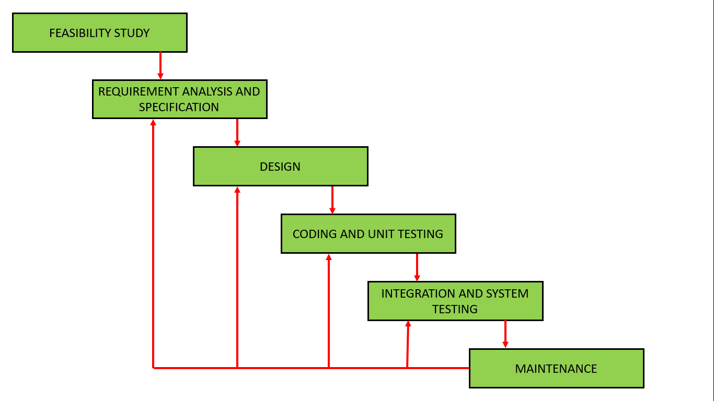
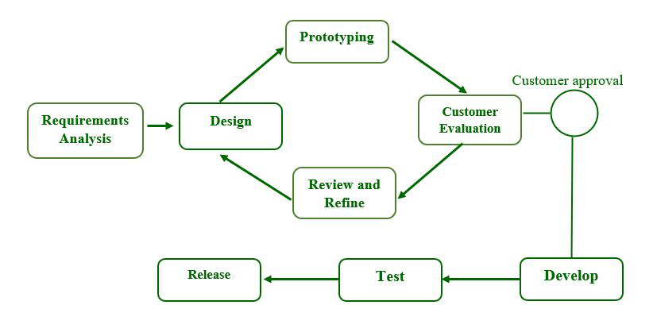
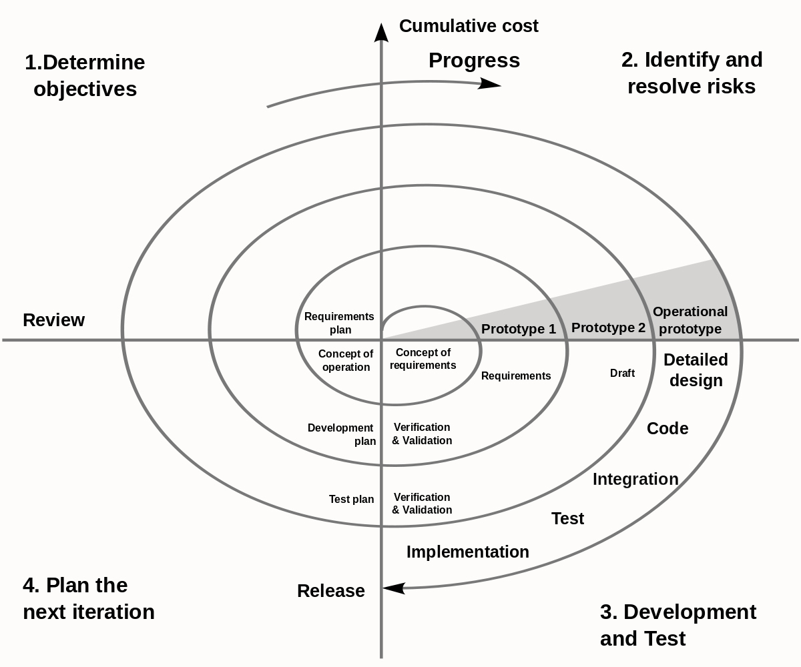
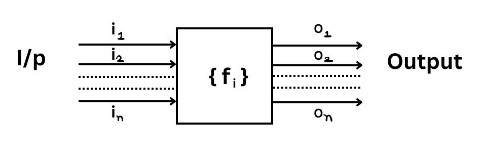
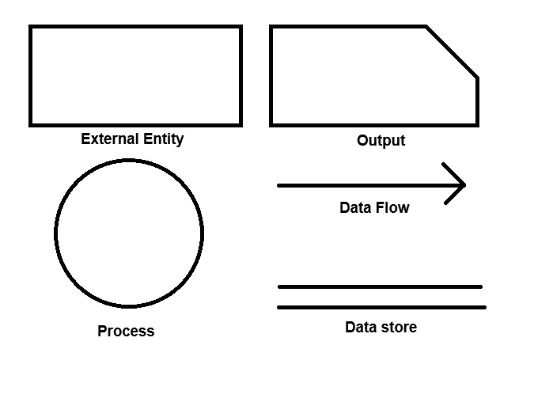
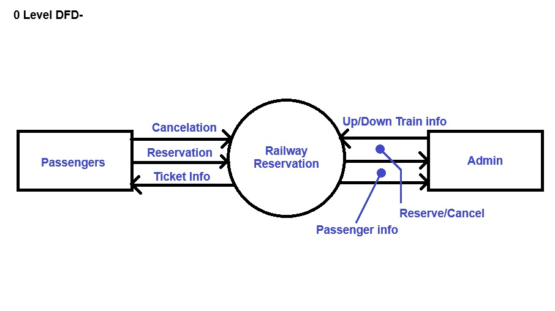
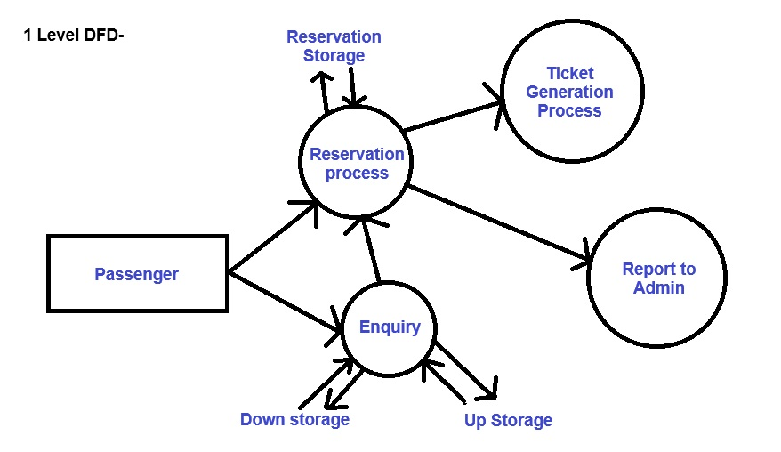
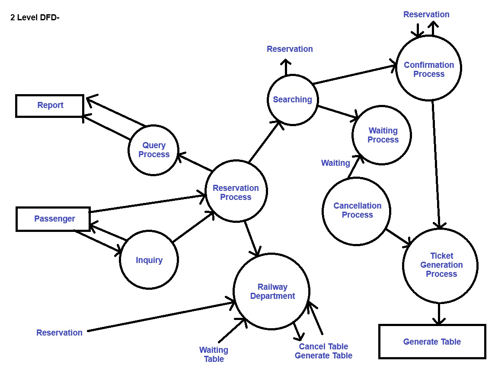
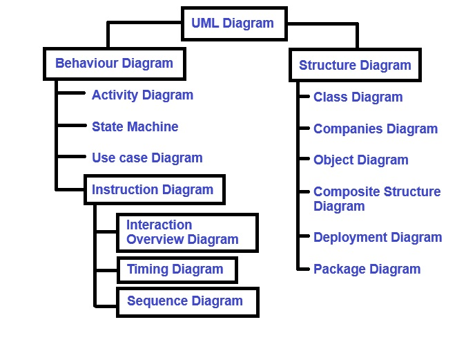

UNIT - I
Software Engineering
The term software engineering is composed of two word, software and engineering. Software is more than just a program code. A program is an executable code, which servers some computational purpose.
Software is consider to be executable programming code, associated libraries and documentations. Engineering on the other hand, is all about developing products using well defined scientific principle and methods.
So we cab define software engineering as an engineering branch associated with the development of software product using the well define scientific principle method and procedure.
The outcome of software engineering is an efficient on reliable software products. IEEE( Institute of Electrical and Electronics Engineers ) define software engineering as the application of systematic, discipline, quantifiable approach to the development, operation and maintenance of software.
Need of Software Engineering
The need of Software Engineering arise because of higher rate of change in user requirements and environment on which the software is working.
Large Software
It is easier to build a wall than to a house, likewise as the size of software become large, Engineering has to step up to give it a scientific procedure.
Sociability
If the software process were not based on scientific and engineering concept, it would be easier to recreate new software than to scale an existing one.
Cost
As hardware industry has shown its skills and view, manufacturing has lower down the price of computer and electronic hardware, but the cost of software remains high as proper process is not adopted.
Dynamic Nature
The always growing and adapting nature of software usually depends upon the environment in which the user work. If the nature of software is always changing, new enhancement need to be done. This is where software engineering place a good role.
Quality Management
Better process of software development provides better and quality software product.
Characteristics of Good Software
A software product can be judged by what it offers and how well it can be used. This software must satisfy on the following grounds:
- Operational
- Transitional
- Maintenance
Well Engineering
(i) Operational
This tell how well software works in operation. It can be measured on:
- Usability
- Efficiency
- Correctness
- Functionality
- Dependability
- Security
- Safety
(ii) Transitional
This aspect is important when the software is moved from one platform to another:
- Inter operability
- Reusability
- Adaptability
(iii) Maintenance
This aspect briefs about how well a software has the capabilities to maintain itself in the ever changing environment:
- Modularity
- Maintainability
- Flexibility
- Scalability
In short we can say software engineering is a way which tells us to make a software by using well define engineering concept required to efficient, durable, scalable, in budget and on time software product.
Software Development Life Cycle
Lifecycle Model
A Software Life Cycle model ( called as process model ) is a descriptive and diagrammatic representation of the software life cycle. A lifecycle model represents all the activities required to make a software product. In other words, a lifecycle model maps the different activities perform on a software software product from its inception to retirement. During any life cycle phase, more than one activity make also be carried out.
Need for Software Life Cycle Model
The development team must identify a suitable and then adhere to it. Without using of a particular life cycle model the development of a software product would not be in a systematic and disciplined manner. When a software product is being developed by a team there must be a clear understanding among team members about when and what to do. Otherwise it would lead to chaos and project failure.
Types of different Lifecycle Models
Many life cycle model have been proposed so far, each of them has some advantages as well as some disadvantages. A few important and commonly used lifecycle models are as follows:
- Classical waterfall Model
- Iterative waterfall Model
- Prototyping Model
- Evolutionary Model
- Spiral Model
Classical Waterfall Model
Feasibility Study
The main aim of feasibility study is to determine wether it would be financially and technically feasible to develop the product.
- At first, project manager or team leader try to have a rough understanding of what is required to be done by visiting the client side.
- After they have an overall understanding of the problem they investigate the different solution that are possible. Then they examine each of the solutions in terms of what kind of resources required, what would be the cost of development and development time for each solution.
- Based on this analysis they pick the best solution is feasible financially and technically.
Requirements Analysis and Specifications
The aim of the requirements analysis and specifications phase is to understand the exact requirements of the customer and to document them properly.
This phase consist of two of the following activities:
(i) requirements gathering & analysis
(ii) requirements specifications
- (i) Requirements gathering & analysis: The goal of the requirements gathering activity is to collect all relevant information from the customer regarding the product to be develop. This is done to clearly understand the customer requirement so that incompleteness are removed.
The requirement analysis activity is began by collecting all relevant data regarding the product to be developed from the users of the product and from the customer through interviews and discussion after that the next phase of the requirements is started. - (ii) Requirements specifications: During this activity, the user requirement are systematically organized into a Software Requirement Specification ( SRS ) document. The customer requirements gathering and analysis activity are organized into a SRS document. The important component of this documents are functional requirement, non functional requirement and the goals of implementation.
Design
The goal of the design phase is to transform the requirement of specified in the SRS document into a structure that is suitable for implementation in some programming language in a technical terms during the design phase the software architecture is derived from the SRS document. There are two different approaches are available:
(i) Traditional design approach
(ii) Object oriented design approach
- (i) Traditional design approach: A structured analysis of the requirement specification is carried out where the detailed structure of the problem is examine. This is followed by the structured design activities. The result of structured analysis are transform into the software design.
- (ii) Object oriented design approach: In this technique, various object that occur in the problem domain end. The servicer domain are first identified and the different relationships that exist among these objects are identified.
Coding and unit testing
The purpose of the coding phase ( sometimes called the Implementation phase ) of software development is to translate the software design into source code.
Each component of the design is implemented as a program module. The end product of this phase is a set of program modules that help in individually tested. It involves testing each module in a solution as this is the most efficient way to debug the error identified at this stage.
Integration and System testing
Integration of different modules is undertaken once they have been coded and unit tested. During the integration and system testing phase, the modules are integrated in a plant manner. Integration is normally carried out incrementally over a number of steps. During each integration step, the partially integrated system is tested and a set of previously plant modules are added. Then finally, when all the modules have been successfully integrated and tested, system testing is carried out. The goal of system testing is to insure that the developed system of the develop software confirms to its requirement led out in the SRS document.
System testing usually consist of the three different kinds of testing activities:
- (i) Alpha Testing: It is the system testing perform by the development team.
- (ii) Beta Testing: It is the system testing perform by a friendly set of customers.
- (iii) Acceptance Testing: It is the system testing perform by the customer himself. After the product is delivered, it is determined whether to accept or again make changes to the delivered product. System testing is normally carried out in a plant manner according to the system test plant document.
Maintenance
Maintenance is a typical software product act that requires much more than the effort necessary to develop the product itself. Maintenance effort is roughly in the 40 : 60 ratio.
Maintenance involves performing anyone or more of the following 3 kinds of activities:
- (i) Correcting errors that were not discover during the product development phase.
- (ii) Improving the implementation of the system and enhancing the functionalities of the system according to the customer's requirement. This is called perfective maintenance.
- (iii) Porting the software to work in a new environment. This is called Adaptive maintenance
Iterative Waterfall Model
To overcome the major short coming of the classical waterfall model, we came up with the iterative waterfall model.
Here, we provide feedback paths for error collection has detected later in any phase. The advantage of this model is that there is a working model of the system at a very early stage of development which makes it easier to find functional or design flaws.
The disadvantage with this SDLC ( Software Development Life Cycle ) model is that it is applicable only to large and bulky software development project.
Prototyping Model
A prototype is a toy implementation of the system. A prototype usually exhibits limited functional capabilities, low reliability and insufficient performance compared to the actual software. A prototype is usually built using several shortcuts. The shortcuts might involve using inefficient, inaccurate or dummy functions. A prototype usually turns out to be a very crude version of the actual system.
Need for a prototype in software development
There are several uses of a prototype. An important purpose is to illustrate the input data formats, messages, reports and the interactive dialogue to the customer. This is a valuable mechanism for gaining better understanding of the customer need.
- How the screen might look like?
- How the user interface would behave?
- How the system would produce output?
Another reason for developing a prototype is that it is impossible to get the perfect product in the first attempt. The experience gain in developing the prototype can be used to develop the final product.
Incremental Model
It is also called a successive version model. At first, a simple working model is built. It under goes functional improvement and we keep on adding new function till the desired system is built.
- Application
- Large project where you can easily find modules for incremental implementation.
- Also used in object-oriented software development because the system can be easily portion into units in terms of objects.
- Advantages
- User gets a chance to experiment partially developed system.
- Reduce the error because the four modules get tested.
- Disadvantages
- It is difficult to divide the problem into several versions that would be acceptable to the customer which can be incrementally implemented and delivered.
Spiral Model
The Diagrammatic representation of this model appears like a spiral with many loops. The exact number loops in the spiral is not fixed. Each loop of the spiral represents a phase of the software process.For example, the innermost loop might be concerned with feasibility study, the next loop with requirement specifications, the next one with design and so on. Each phase in this model is split into four section.
- First Section ( Objective Identification )
- During the first sector, it is needed to identify the objective of phase.
- Examine the risk associated with these objective.
- Second Sector ( Risk Assessment & Reduction )
- A detailed analysis is carried out for each identified project risk.
- Steps are taken to reduce the risk.For example, if there is a risk that the requirements are inappropriate, the prototype system may be developed.
- Third Sector ( Development & Validation )
- Develop and Validate the next level of the product after resolving the identified risk.
- Fourth Sector ( Review and Planning )
- Review the result achieve so far with the customer and plan the next iteration around the spiral.
- More complete version of the software gets built with each iteration around the spiral.
Circumstances to use Spiral Model
The spiral model is called a Meta Model since it encapsulates all other life cycle models. Risk handling is inherently build into this model. The spiral model is suitable for development technically challenging software product. However this model is much more complex than the other model.
Comparison of different Life Cycle Model
The classical waterfall model can be considered of basic and all other life cycle model as embellishment of this model. However the classical waterfall model cannot be used in practical development projects. This program is overcome in the iterative waterfall model. The iterative waterfall model is most widely used software development model so far. For this model, it's simple to understand and use. This is not suitable for very large projects and for projects that are subject too many risk.
The prototyping model is suitable for projects for which either the user requirements or the underline technical aspect are not well understood. This model is specially popular for development user interface part of the projects.
The incremental approach suitable for large problems which can be composed into a set of modules for incremental development and delivery. This model is also widely used for object oriented development projects. The spiral model suitable for development for technically challenging software product that have several kinds of risk. This is more complex than the other models that's why this is not used in ordinary project.
Requirements Analysis and Specification
Before we start to develop any software it becomes quiet essential for us to understand and document the exact requirement of the customer. Experienced members of the development team carry out t his job. They are called system analyst.
The analyst starts requirement gathering analysis activity by collecting all information from the customer and then analyze the collecting information to obtain a clear thorough understanding of the product to be developed. With a view to remove to remove on ambiguities and inconsistency from the initial customer perception of the problem.
The following basic questions should be clearly understood by the analyst:
- What is the problem?
- Why is it important to solve the problem?
- What are the possible solution to the problem?
- What exactly are the data input to the system and what exactly are the data output by the system?
- What are the likely complexities that might arise while solving the problem?
- If there are external software or hardware with which the developed software has to interface, then what exactly would be data inter chain formats with the external system be?
Parts of a SRS Document
The important parts of SRS documents are:
- Functional Requirements of the system.
- Non-Functional requirements of the system.
- Goals of implementation.
Functional Requirements
The functional requirements part discusses the functionalities requirement from the system. The system is considered to perform a set of high level functions[ fi ]. Each function ' fi ' of the system can be considered as a transformation of set of input data [ ii ] to the corresponding set of output data [ Oi ]. The user can get some meaningful piece of work done using a high level function.
Non-functional Requirements deal with the characteristics of the system which can't be expressed as functions such as the maintenance of the system, portability of the system usability of the system.
Goals of Implementation
The goals of Implementation part documents some general suggestion regarding development. These suggestion guide trade of among design goals. The goals of implementation session might document issue such as revision to the system functionalities that may be required in the future, new devices to be supported in the future, re-usability issues,etc. These are the items which the developers might keep in their mind during development.
Identifying functional Requirements from a Problem Description
The high level functional requirement often need to be identify either from an informal problem description document or from a conceptual understanding of the problem. The high level requirement characterized a way of system uses by some user to perform some meaningful piece of work. There can be many types of users of a system & their requirements from the system may be very different. So, it is often useful to identify the different types of users who might use the system & then try to identify the requirements from each user's perception.
eg. Consider the case of the library system where,
fi - search book function
strong - author's name
output - details of the author's book 7 location of these books in the library.
So, the function 'Search book' { fi } takes the author's name & transforms it into book detail.
Documenting functional Requirement
For documenting the functional requirements we need to specify the set of functionalities supported by the system. A function can be specified by identifying the state at which the data is to be input to the system, it's input data domain, the output data domain & the type of processing to be carried on the input data to obtain the output data.
Example: Withdrawal cash from ATM
R1 → Withdraw Cash
First determine the type of account that the user have & the account number from which the user wishes to withdraw cash. Check the balance to determine whether the requested amount is available in the account. if enough balance is available, it outputs required cash otherwise it generates an error message.
R1.1 → Select Withdraw Amount Option
input → withdraw amount option
output → user prompted to enter the account type
R1.2 → Select Account Type
input → user option
output → prompt to enter amount
R1.3 → Get Required Amount
input → amount to be withdrawn in integer value greater than 100 & less than 1000 in multiples of 100.
output → the requested cash & printed transaction statement.
processing → the amount is debited from the user's account if sufficient balance is available otherwise an error message is displayed.
Properties of a Good SRS Document
The important properties of a good SRS Document are the following:
Concise
The SRS Document should be concised & at same time unambiguous, consistent & complete, verbose & if relevant description reduce readability & also increase error possibilities.
Structure
It should be well structured. A well structured document is easy to understand & modify.
Black Box View
It should only specify what the system should do & refrain from stalking how to do these. This means that the SRS Document should specify the external behaviour of the system & not discuss the implementation issue. The SRS Document should view the system to be developed as black box & should specify the externally visible behaviour of the system. For this reason the SRS Document is also called the black box specification of the system.
Conceptual Integrity
It should show conceptual integrity so that the reader can easily understand it.
Response to Undesired Event
It should characterized acceptable responses to undesired event. These are called response to exceptional conditions.
Verifiable
All requirements of the system as documented in the SRS Document should be verifiable. This means that its should be possible to determine whether or not requirements have been made in an implementation.
Problem Without a SRS Document
The important problem that an organization would face if it doesn't develop a SRS Document are as following -
- Without developing the SRS Document, the system would not be implemented according to customer's need.
- Software developers would not know whether what they are developing is what exactly required by the customer.
- Without SRS Document, it will be very much difficult for the maintenance engineers to understand the functionalities of the system.
- It will be very much difficult for users document writers to write the suer's manual properly without understanding the SRS Document.
Problem with an Unstructured Specification
→ It would be very difficult to understand that document.
→ It would be very much difficult to modify that document.
→ Conceptual integrity in that document would not be shown.
→ The SRS document might be incomplete & inconsistent.
Decision Tree
A decision tree gives a graphic view of the processing logic involved in decision making & the corresponding actions taken. The edges of a decision tree represent conditions & the leaf node represents the actions to be perform depending on the outcome of testing the condition.
Example: Consider library membership automation software [LMS] where it should support the following three option:
- → New Member
- → Renewal
- → Cancel Membership
New Member Option
Decision
When the new member option is selected the software ask details about the member like member's name, address, phone no, etc.
Action
If proper information is entered then a membership record for the member is created & a bill is printed for the annual membership charge + the security deposit payable.
Renewal Option
Decision
If the renewal option is chosen, the LMS ask for the members name & his membership number to check whether he is a valid member or not.
Action
If the membership is valid then membership expiry date is updated & the annual membership bill is printed, otherwise an error message is displayed.
Cancel Membership Option
Decision
If the cancel membership option is selected then the software ask for member's name & his membership number.
Action
The membership is cancelled, a cheque for the balance amount due to the member is printed & finally the membership record is deleted from the database.

Decision Table
A decision table is used to represent the complex processing logic in a tabular or a matrix form. The upper rows of the table specify the variables or conditions to be evaluated. The lower rows of the table specify the action to be taken when the corresponding conditions are satisfy. A column in a table is called Rule.
Rule implies that if a condition is true, then the corresponding action is to be executed.
| Conditions | ||||
|---|---|---|---|---|
| Valid Selection | No | Yes | Yes | Yes |
| New Member | - | Yes | No | No |
| Renewal | - | No | Yes | No |
| Cancellation | - | No | No | Yes | Actions |
| Display error message | x | - | - | - |
| Ask member's details | - | x | - | - |
| Build customer records | - | x | - | - |
| Generate bill | - | x | x | - |
| Ask member's name & membership number | - | - | x | x |
| Update expiry date | - | - | x | - |
| Print cheque | - | - | - | x |
| Delete record | - | - | - | x |
Software Design
Software Design is a process to transform user requirement into some suitable forms which helps the programmer in software coding & implementation. For accessing user requirement and SRS Document is created whereas for coding and Implementation, there is a need of more specific and detailed requirements in software terms. The output of this process can directly be used into implementation in programming language. Software design is the first step in SDLC ( Software Design Life Cycle ) , which moves consubstantial from problem domain to solution domain.
It tries to specify how to fulfill the requirement mention in SRS.
Software Design Levels
There are three levels of software design.
- Architectural Design
- High Level Design
- Detailed Design
Architectural Design
The architectural design is the highest abstract version of the system. It identifies the software as a system with many component interactive with each other at this level, the designer get the idea of proposed solution domain.
High Level Design
The high level design breaks single entity, multiple component concept of architectural design into less abstract view of sub system modules and depicts their interaction with each other. High level design focuses on how the system along with all of its components can be implemented in form of modules. It recognize modular structure of each sub system and their relation and interaction among each other.
Detailed Design
Detailed design deals with the implementation part of what is seen as a system and its sub system in the previous tool designs. It is more detailed towards modules and their implementation. it defines logical structure of each module and their interfaces to communicate with other modules.
Modularization
Modularization is a technique to divide a software into multiple discrete and independent modules, which are expected to be capable of carrying out the task separately. These modules may work as a basic construct for the entire Software. Designers tends to design modules such that they can be executed and compiled separate and independent. Modular design unintentionally follows the rules of divide and conquer problem solving technique. This is because there are many other benefits attached with the modular design of a software.
Advantages Of Modularization
- Smaller Components are easier to maintain.
- Program can be divided based on functional aspect.
- Desired Level of Abstraction can be brought into the program.
- Components which high cohesion can be reused again.
- Concurrent execution can be made possible. Desired from security aspect.
Concurrency
In Software Design, concurrency is implemented by splitting the software into multiple independent unit of execution, like modules and executing them in parallel. In other words, concurrency provides capability to the software to execute more than one part of code in parallel to each other. It is necessary for the programmers and designer to recognize those modules, which can be made parallel execution.
eg, The spelling check feature in word processor is a module of software, which runs alongside the word processor itself.
Coupling and Cohesion
When a software program is modularized, its task are divided into several modules based on some characteristics. As we know, modules are set of instructions put together in order to achieve some task. They are considered as single entity but may refer to each other to work together. There are measures by which the quality of a design of modules and their interaction among them can be measured. The measures are called as coupling and cohesion.
Cohesion
Cohesion is a measure that defines the degree introdependibility within element of a module. The greater the cohesion, the better is the program design. There are seven types of cohesion-
- Coincidental Cohesion- It is unplanned cohesion, which might be the result of breaking the program into smaller modules for the sake of modularization. It may server confusion to the programmers and is generally not accepted.
- Logical Cohesion: When logically categorized element are put together into a module, It is called logical cohesion.
- Temporal Cohesion: When elements of modules are organized such that they are processed at a similar point in time, it is called temporal cohesion.
- Procedural Cohesion: When elements of module are grouped together, which are executed sequentially in order to perform task, it is called procedural cohesion.
- Communicated Cohesion: When elements of module are grouped together, which are executed sequentially and work on same data ( information ). It is called communicational cohesion.
- Sequential Cohesion: When element of module are grouped because the output of one element serve as input to another and so on, it is called sequential cohesion.
- Functional Cohesion: It is considered to be the highest degree of cohesion, and it is highly expected. Elements of module in functional cohesion a grouped because they all contribute to a single well define function. It can also be reused.
Coupling
Coup0ling is a measure that defines the level of interdependability among modules of a program. It tells that what level the modules interfere and interact with each other. The lower the coupling, the greater the program. There are five levels of coupling-
- Content Coupling: When a module can directly access or modify or refer to the content of another module, it is called content level coupling.
- Common Coupling: When multiple modules helps read and write access to same global data. It is called common or global coupling.
- Control Coupling: Two modules are called control coupled. If one of them decides the function of the other module changes its execution.
- Stamp Coupling:- When multiple modules share common data structure & work on different part of it, it is called stamp coupling.
- Data Coupling: Data coupling is when two modules interact with each other while means of passing data [as parameter]. If a module passes data structure as parameter, then the receiving module should use all its components.
Design Verification
The output of software design process is design documentation pseudo codes, detailed logic diagrams, process diagrams & detailed description of all functional & non-functional requirements.
The next phase, which is the implementation of software, depends on all outputs mention above. It is then becomes necessary to verify output before preceding to the next phase. The early any mistake is detected, the greater it is or it might not be detected until testing of the products. If the outputs of design phase is in formal notation form, then their associated tools for verification should be used otherwise a thorough design review can be used for verification & validation.
A good design review is important for good software design, accuracy & quality.
Function Oriented Design
In function oriented design, the system is comprised of many small sub system known as functions. These functions are capable of performing significant task in the system. The system is considered as top view of all function. Function oriented design inherit some properties of structure design where divide & conquer methodology is used. This design mechanism divides the whole system into smaller functions, which provides means of abstraction by concealing the information & their operation.
Another characteristics of fun is that when a program calls a function, the function changes the state of the program. Sometimes is not acceptable by other modules.
Function oriented design works well where the system state doesn't matter & program/fun work on input rather than on a state.
Design Process
The whole system is seen as how data flows in the system by means of data flow diagram.
DFD [Data Flow Diagram]
- It depicts how function change the data & state of entire system.
- The entire system is logically broken down into smaller units known as functions on the basis of their operations in the system.
- Key function is then described at large.
Object Oriented Design
Object oriented design works around the entities & their characteristics instead of functions involved in the software system. The whole concept of Software solution revolves around the engaged entities.
The important concept of object oriented design-
- Object: All entities involve in solution design are known as object. Every entity has some attributes associated to it & has some methods on the attribute.
- Classes: A class is a generalized description of an object. An object is an instance of a class. Class defines all the attributes, which an object can have methods, which defines the functionality of the object. In the solution design, attributes are stored as variables & functionalities are defined by means of method or procedures.
- Encapsulation: The attributes [data variables] & the methods [operation on the data] are bundled together is called encapsulation. Encapsulation not only bundles important information of an object together, but also restrict abstract of data & methods from the outside worlds. This is called information hiding.
- Inheritance: Object oriented design allows single classes to stack up in hierarchical manner where the lower or such classes can import, implement & reuse allow variables & methods from where immediate super classes. This property of object oriented design is known as inheritance.
- Polymorphism: Object oriented design languages provide a mechanism where methods performing similar task but vary in arguments, can be assigned same name. This is called polymorphism, which allows a single interface performing task for different types.
Design Process
Software design process can be perceived as a series of well defined steps. It may varies according to design approach [fun oriented or object oriented]. It may have the following steps involves:
- A solution design is created from requirements or previous used system & system sequence diagrams.
- Objects are identified & grouped into classes on behalf of similarity in attribute characteristics.
- Class hierarchy & relation among them are define.
- Application frame work is defined.
Software Design Approach
There are two generic approach for software designing-
- Top-Down Design: We know that a system is composed of more than one sub-system and it contains a number of components. Further, these sub systems and components may have there one set of sub system and components of are creates hierarchical structure in the system.
Top-Down design takes the whole software system as one entity and when decomposes it to achieve more than one sub-system or components based on some characteristics. Each sub-system or component is then treated as a system and decomposed further. This process keeps on running until the lowest level of system in the top down hierarchy is achieved. Top-Down design is more suitable when the software solution needs to be design from scratched and specific details are unknown. - Bottom-Up Design: The Bottom-Up design model starts with the most specific and basic components, it precedes with composing higher level of components. It keeps dealing higher level component until the desired system is not evolved as one single component with each higher level, the amount of abstraction is increased.
Bottom-Up Design is more suitable when a system needs to be created from sum existing system, where the basic preemptive can be use in the new system. Both Top-Down and Bottom-Up approaches are not practical individually. Instead, a good combination of both is used.
Software Analysis and Designed Tools
Software analysis and designed includes all activities. Which helps the transformation of requirement specification includes implementation. Requirement specification specify all functional & non-functional expectation from the software. These requirement specification come in the shape of human readable and understandable documents. Software Analysis and Design is the intermediate stage, which helps human readable requirements to be transformed into actual code. There are four analysis and design tools used by software designers.
(i) DFD [Data Flow Diagram]
Capable of depicting incoming data flow & stored data. The DFD doesn't mention about how data flows through the system. There is a difference between DFD &Flowchart. The flowchart depict flow of control in program module, DFD depict flow of data in the system at various levels. DFD doesn't contain any control over branch elements.
Types of DFD
- Logical DFD: This type of concentrates on the system process & flow of data in the system.
For Example: In a banking software, how data is moving between different entities. - Physical DFD: This types of DFD, shows how the dataflow actually implemented in the system. It is more specific & close to the completion.
DFD Components
DFD can show / represent, destination storage & flow of data using the following set of component
- Entities: Entities are source and destination of information, entities are represented by rectangles with there respective names.
- Process: Activities and action taken on the data are represented by circle.
- Data store: There are two variants of data storage, it can either be represented as a rectangle with actions of both smaller size or as an open sided rectangle with only one side missing.
- Data flow:Movement of data is shown by quanted arrows. Data movement is shown to from the base of arrow as its source towards head of the arrows as destination.
Importance of DFD's in Input Software Design
The main reason why DFD's technique is so popular is because of the fact DFD is very simple to understand & use. Starting with a set of of high level function that a system performs are DFD model hierarchically represents various sub functions. The data flow diagramic technique also follows a very simple set of informative concept & rules DFD is an elegant modeling technique that turns out to be useful not only to represent the results of structured analysis of a software problem, but also form several other applications such as showing the flow of documents or items in an organization.
Data Dictionary
A data dictionary list or data items appearing in the DFD model of a system. A data dictionary list the purpose of all data items & the definition of all composite data items in terms of their components data items.
There are some preemptive data items using the following data definition operations.
+ [Addition Sign]: Denotes composition of two data items.
, [Comma Sign]: Represents selection, that is any one of data items listed in the brackets can occur.
( ) [Parenthesis]: The content inside the brackets represent optional data which may or may not appear.
{ } [Curly Brackets]: Represents iterative data definition.
= [Equal Sign]: Represent equivalence.
/* */ [Forward slash with asterisk]: Anything appearing within this symbol considered as a comment.
Advantages of DFD
- Easy to understand: DFD's are graphical representation that are easy to understand & communicate making them useful for non-technical and team members.
- Include System Analysis: DFD's are useful for analyzing & system process & data flow which can help identify problems that may exist in the system.
- Support System Design: DFD's can be used to design & system's architecture & structure, which can help ensure that the system is design to meet the requirements of the client.
- Enables Texting & Verification: DFD's can be used to identify the inputs & outputs of the system, which can help in the texting & verification of the system's functionality.
- Facilitate Documentation: DFD's provides a visual representation of a system, making it easier to document & maintain the system.
Disadvantages of DFD
- Can be time consuming: Creating DFD's can be a time consuming process, specially for complex system.
- Limited focus: DFD's focus on the flow of the data in a system & may not capture other important aspect of the system, such as user interface design, system security or system performances.
- Can be difficult to keep up-to-date: DFD's may become out of date overtime as the system evolves & changes.
- Required technical expertise: While DFD's are easy to understand, creating them requires to certain level of technical expertise for the system being analyzed.
Level of DFD's
Level Zero DFD
This is the highest level DFD which provides an overview of the entire system. It shows the major processes data flow & data stores in the system, without providing any details about the internal working of these processes.
Level One DFD
This level provides a more detailed view of the system by breaking down the major processes identified in the level zero DFD into sub processes. Each sub process is defected as a separate process on the Level one DFD. Data close and data stores associated with each sub processes.
Level Two DFD
This level provides an even more detailed view of the system by breaking down the sub processes identify in the Level One DFD into further sub processes.
Level Three DFD
This is the most detailed level of the DFD's which provides a detailed view of the processes, data flow and data stores in the system. This level is used for complex system, where one high level of detailed is required to understand the system, each process on the Level Three DFD is depicted with a detailed description of its input, processing and output.
Example: Make a DFD for railway reservation.
  Structured Design
The aim of structured design is to transform the result of structured analysis (DFD Representation ) into a structure chart. Structured Design provides two methods to guide & transformation of a DFD into a structure chart-
(i) Transform Analysis
(ii) Transaction Analysis
Normally, one start with the level 1 DFD transform it into module representation using either the transform or the transaction Analysis and then proceed towards the lower level DFDs. At each level of transformation it is important to first determine whether the transform or transaction analysis is applicable to a particular DFD.
Structure Chart
A structure chart represents the software architecture, that is the various modules making up the system, the dependency and the parameters that are passed among the different modules. hence, the structure chart representation can be easily implemented using some programming language.
The basic building blocks which are used to design structure charts are the following-
- Rectangle Box: Represents a module
- Modules: Module invocation arrows- control is part on one module in the direction of the connecting arrow.
- Data Flow Arrow: Arrows are denoted with data name(named data passes from one module to another in the direction of the arrow).
- Library Modules: Represented by a rectangle with double edges.
- Selection: Represented by a diamond symbol.
- Repetition: Represented by a loop around the control flow arrow.
Structure Chart V/S Flow Chart
We are all familiar with the flow chart representation of a program. Flow chart is a convenient technique to represent the flow of control in a program. A structure chart differs from a flow chart in three principle ways.
- It is usually difficult to identify the different module of the software from its flowchart representation.
- Data interchange among different modules is not represented in a flow chart.
- Sequentially ordering task inherent in a flow chart is suppressed in a structure chart.
Transform Analysis
Transform Analysis identifies the primary function components modules and the high level inputs and outputs.
The DFD in few types of parts-
- Logical Processing
- Output Processing
The input portion of DFD includes processes that transform input data from physical (character from terminal ) to logical forms (internal table, list ). Each input portion is called an Afferent Branch
The output portion of a DFD transform output data from logical to physical form. Each output portion is called efferent branch. The remaining portion of a DFD is called the central transform.
Object-Modeling Using UML
(i) Model: A model captures aspects important for some application while of abstracting the rest. A model in the context of software development can be graphical, mathematical, textual or program code based. Models are very useful in documenting the design and analysis results. Graphical Models are very popular because they are easy to understand and construct. UML is primary tool of graphical modeling tool.
Need For a Model
An important reason behind constructing a model is that it helps manages complexity. Once models of a system have been constructed, these can be used for a variety of purpose during Software development including analysis, specification, code generation, design, visualize and understand the problem and the working of a system and testing.
In all these application, the UML models can not only used to document the result but also to arive the result themselves.
UML (Unified Modeling Language)
As the name implies, is a modeling language. It may be used to visualize, specifies, construct, document artifacts of a software system. It provides a set of notations (examples, rectangles, lines, circles) to create a visual model of the system. Like any other language, UML has its own syntax, and symbols and sentence formation rules and semantics ( meanings of symbols and sentences ). UML is not the system design or development methodology but can be used to document. Object Oriented and Analysis results obtained using same methodology
Origin of UML
In the late 1980s and early 1990, there was a proliferation of object oriented design technique and innovation. Different Software Development houses were using different notation to document there object oriented designs. These diverse notation used to give rise to a lot of confusion. UML has develop to maintain the standard of object oriented modeling notation. The principles ones in use were-
(i) Object Management technology ( Rumbough 1991 )
(ii) Booch's methodology ( Booch 1991 )
(iii) Object Oriented Software Engineering ( Jacobson 1992 )
(iv) Odell's methodology ( Odell 1992 )
(v) Shaler and Mellor methodology ( Shaler 1992 )
UML Diagram
The UML diagram are categorized into structured diagram, behavioral diagram & also interaction, overview diagrams. The diagrams are hierarchically classified in the following diagram-
Structure(Structural) Diagram
Structural Diagram depicts a static view or structure of a system. It is widely used in the documentation of software architecture. It has class diagrams, companies diagrams, object diagrams, composite structure diagrams, deployment diagrams, package diagrams.
Class Diagram
Class diagram are one of the most widely used diagram. It is the backbone of all the object oriented software system. It displays the system's class, attributes and methods. It is helpful in recognizing the relation between different object as well as classes.
Composite Structure Diagram
Composite structure diagram shows parts within the class. It displays the relationship between the parts and their configuration that certain the behavior of the class. Similar to class diagram, just the fact it represents individual parts in a detailed manner when compared with class diagram
Object Diagram
It described the static structure of the system at a particular point in time. It can be used to test the accuracy of class diagram. It represents distinct instance of classes and the relationship between them.
Component Diagram
It portrays the organization of the physical components within the system. It is used for modeling execution details. It determines whether the desired functional requirements have been considered by the plant development or not. It shows the structural relationship between the elements of a software system.
Deployment Diagram
It represents the system's software and its hardware by telling what the existing physical components are and what software are running on them. It produce information about system software. It is incorporated whenever software is used, distributed for deployed access multiple machines with different configuration.
Package Diagram
It is used to elaborate how the packages and their element are organized. It shows the dependencies between distinct packages.It manages UML Diagrams by making it easily understandable. It is used for organizing the class and used case diagram.
Behavioral Diagram
To be updated . . .